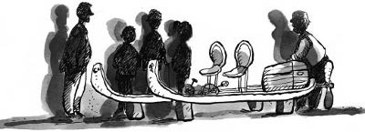

25 Ağustos 1928
Sabah herkes birbirine,
— Sabah şeriflerin hayrolsun.
— Bir şey bulan var mı?
— Yok!
— O zaman kahvaltımızı babaannemden izin alıp beybabada yapalım.
Hemen hazırlanıp çıktılar. Hızla Muhittin Dede’nin yanına ulaştılar. Muhittin Dede’nin kendi fırınında yaptığı çöreklerden yediler.
Zafer,
— Mmımmm... Birkaç tane daha alabilir miyim, şahane olmuş?
Muhittin Dede,
— Oğlum sen sev de bir fırın dolusu daha yaparım ben sana.
— Zafer, yemeğe mola ver de şu şifreyi çözelim, dedi Nisan.
Muhittin Dede’ye dün akıllarına gelenleri Fatih’i, Çelebi Mehmet’i anlattılar.
— Olabilir, lakin Erdoğan size son aşamaya geldiğinizi anlatmış. Kişileri doğru tarif etmiş bile olsa, nereye gideceğiniz ve ne yapacağınızla ilgili bir şey yok. Nisan’ın söylediği gibi bu bulmacada bir yer gizli olmalı; belki de İstanbul’un manastırlarını dolaşmalısınız.
Nisan, “Bir saniye bakın, ilginç bir şey var” dedi, kitabın sayfasını tekrar gösterdi.
Kralın iki kadim hayırsız oğlu
Dua ederler metruk manastırda
Gözleri kumdan yeni yapılmış kapıda
Yassı burunlu prens değersiz
Sivri burunlu oturacak tahta.
— Üçüncü satıra bakın, “kum”, “yeni” ve “kapı”daki ilk harflerin üstünden geçmiş.
Zafer,
— Eeeee?
Nisan,
— Çünkü bize bir ipucu veriyor. Bu kelimelerin üstünde düşünmemizi istiyor. Aaa! Bu prensler Yenikapı’ya ve Kumkapı’ya bakıyorlar. Burada bir manastır var mı beybaba?
— Vortvots Vorodman[26] Kilisesi var ama... Yenikapı, Kumkapı, bizim Samatya’yla yan yana, hemen şurası. Manastırdan önce denizle ilgili düşünmeliyiz, çünkü Erdoğan’ın Erim’e bıraktığı icat, denizle ilgili.
Erim,
— Babam ne bıraktı beybaba?
— Belki birazdan görürsün Erim, dedi Muhittin Dede.
Hepsinin gözleri denize yöneldi.
Nisan,
— Beybaba, karşıdaki iki adanın adı ne?
— Yassıada ve Sivriada.
“İşte!” diye ayağa kalktı çocuklar.
— Kumkapı ve Yenikapı’ya bakan Prensler!
— Nasıl da düşünemedim! Müthiş gizlemiş Erdoğan; İstanbul’a yakın bu adaların tamamına “Prens Adaları” derler. Zamanında Bizans’ta prensleri bu adalara sürüp tecrit ederlermiş. “Kadim” derken adaların kalıcılığını anlatıyor. Prens Adalarından sadece bu yan yana olan ikisine “Hayırsız Adalar” derler.
— Bizim gitmemizi istediği Sivriada olmalı. Bakın, “yassı burunlu değersiz, sivri burunlu oturacak tahta” diyor Erdoğan Amca. Sivriada’da bir manastır kalıntısı var mı beybaba?
— Yıllar yıllar önce çocukken iki adaya da arkadaşlarımla martı yumurtası toplamaya gitmiştim.
— Martı yumurtası mı?
— Zaferciğim, şu gördüğün İstanbul’daki pastanelerin neredeyse tamamı pasta börek yapımında böyle toplanan martı yumurtalarını kullanırlar. Yüzlerce yıldır kimsenin de haberi yoktur, pastanelerin arasında bir sırdır bu. Normal yumurtadan çok daha ucuzdur ne de olsa. Neyse, her iki adada hüda-i nabit[27] ağaç ve çiçekler ve metruk kalıntılar vardı. Bir manastır da olduğunu hatırlıyorum.
— Demek bu kadar peşinden koştuğumuz sır, tam karışımızda duruyormuş. Peki, niye babam evde ilk açılan mektupta “Sivriada’daki manastıra gidin” demedi? Ertesi sabah yola çıkalım, bu işi çözelim. Niye bu kadar macera yaşadık? Kendisi de Osman Hamdi Bey de biz de niye bu kadar koşturduk acaba?
— “Kimseye güvenme” diyordu ilk mektuplarda, “takip edilmeyin” yazıyordu; demek ki sırrın peşinde olan başkaları da var. Mektubu bulan sırrı keşfetmesin diye.
Nisan cevapladı:
— Ya da macera yaşayalım diye.
— Ya da her ikisi birden, diye akıllıca gülümsedi Erim.
Gökyüzüne sevgiyle baktı. İçinden “Sanki ikiniz de yanımda gibisiniz” dedi.
Erim,
— Peki, nasıl gideceğiz?
— Babanın icadıyla, dedi Muhittin Dede. Bakımını yapmaktan bir hâl oldum ve nasıl çalışacak çok merak ediyorum doğrusu. Hadi gelin, çok şaşıracaksınız.
Muhittin Dede yeleğinin iç cebinden bir anahtar çıkardı, ayağa kalktı. Yürüyecekleri mesafe 15-20 metre olmasına rağmen Erim’in elinden tuttu, sanırım duyduğu heyecanı, sevgiyi Erim’e iletmek, onun duygularını da elleriyle kurdukları köprüden hissetmek istiyordu. Mucize dükkânın içine girdiler; bir perdenin arkasından o ana kadar hiç görmedikleri bir bölüme geçtiler. Karşılarına ahşap bir kapı çıktı, Muhittin Dede sessizce mırıldandı ve elindeki anahtarla kapıyı açtı. Çocuklar da arkasından içeri girdiler. İçerisi oldukça karanlıktı. Muhittin Dede pencerenin pervazlarını açınca içeriye güneş ışığı, Marmara Denizi’nin şahane görüntüsü, karşılarından onlara ve oraya ulaşmalarını sağlayacak icada bakan biri sivri, diğeri yassı burunlu iki prens girdi.
Gördükleri icat karşısında hepsi çok şaşırmıştı.
Erim,
— Bu ne Allah aşkına?
— Bu, bir deniz velosipeti.
— Deniz velosipeti mi? Nasıl yani?
— Bunu, Erdoğan bu atölyede aylarca çalışarak yaptı. Sana ne zaman vermemi istediğini sorduğumda, “Zamanı geldiğinde anlayacaksın beybaba” dedi. En ince ayrıntısına kadar planlamış her şeyi, çok ilginç.
Çocuklar heyecanla deniz bisikletini incelemeye başladılar. Altta iki tane metal kızak, üzerinde iki oturma yeri ve iki pedal, bu pedallara bağlı arkada bir pervane bulunuyordu. Arka bölümde ağırlık ve gıda koymak üzere yapılmış bir sandık, önde de bir pusula vardı. Kızağın birinin üzerine ay yıldız, diğer kızağın yüzeyine fırının içinde buldukları metal çarkın üzerinde gördükleri dört sembol boyayla çizilmişti: balık, güneş, ağaç ve çift başlı kartal.
— Bonjur gençler, diyerek Ahmet Tevfik Amcaları içeri girdi.
— Ve aleyküm selam, dedi Muhittin Dede.
— Bu da nesi?
— Deniz velosipeti, dedi Zafer.
— Muhteşem bir icat! Niye duymadım ben bugüne kadar? İnanılmaz, denizde giden bir velosipet ha! Vay canına! Kim yapmış bunu? Ya Fransızlar ya İngilizler ya da Amerikalılar yapmıştır.
— Yooo... Erdoğan Amca yapmış, deyince Zafer, hepsi gülüştü.
— Nee! Erdoğan mı? Yahu bu benim ona hediye ettiğim velosipet. Bursa gezisini yaptığım “tarihî” velosipet! Zincir falan da istemişti, sonra da hiç binmemişti. “Niye binmiyorsun azizim velosipete?” diye sordukça “İleride görürsün nasıl bindiğimi” diyordu. Demek buymuş...
“Demek buymuş” diyerek bu şaşırtıcı icadın etrafında hayranlıkla dönüp duruyordu.
— Tevfik oğlum, hacca gittiğim günleri hatırladım; Kâbe’nin etrafında böyle senin gibi tavaf etmiştim ben de, dedi Muhittin Dede.

— İnanılmaz bir keşif bu! Amerikalı yapsa şimdi gazetelere manşet olurdu. Ben bunu şu gazeteci Ernest Hemingway’a yazayım da duyursun. Dünya duysun.
— Tevfik, bırak dünyayı, mahallede en yakının duymasın; şu ana kadar gizli tutmayı başardık, aman ha deyim Tevfik oğlum!
— Tamam, beybaba... Yalnız çok güzel cihaz bu, yaşasaydı hava velosipeti bile yapardı alimallah.
— Bu durumda Sivriada’ya bir yolculuk görünüyor, dedi Erim.
— Önce deniz velosipetini denemeli, kullanmayı öğrenmeliyiz. Önümüzde çok zaman olmayabilir. Eğer bu işin içinde başkaları da varsa onlar bizden önce ulaşabilirler.
Zafer,
— Hemen deneyelim mi beybaba?
— Olur oğlum, deniz de çok uygun. Hadi yardım edin de birlikte indirelim suya.